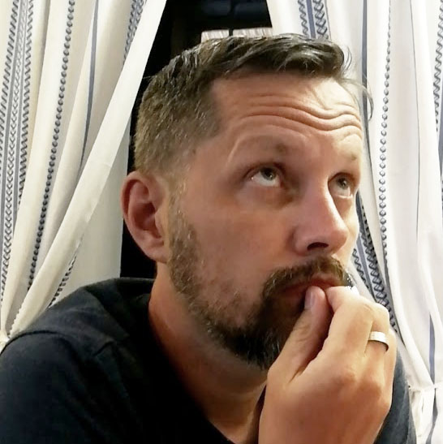

Home
> Bobby vagyok a Geminusról

Szeretettel köszöntök mindenkit a Geminuson!
Balog Róbert vagyok, de szólíts csak Bobbynak! Első projektfeladatunk apropóján engedjétek meg, hogy pár gondolatot írjak magamról!
Alapvetően mechatronikai technikusként végeztem, de a racionális gondolkodás mellett sosem álltak távol tőlem a humán tárgyak.
Összetett személyiségnek tartom magam, akiben sokszor vívódik ez a két fél. Innen is jött a Geminus, amelyet a gemini, azaz ikrek kifejezésből alkottam és a magam kis világát hivatott megszemélyesíteni. A világomat, amelybe belefér többek között az informatika, a futás, a néptánc, az írás, a videózás szeretete is.
Ha szeretnétek megismerni, tartsatok velem az oldalamon!